Gaza death toll from Israeli offensive tops 43,000 since Oct 2023: health ministry
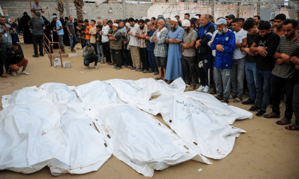
Urges international community to end bloodshed in Palestine, Lebanon; Sri Lanka deploys troops to Jewish community centre after US warning.
Updated about 11 hours ago
RELATED
Yahya Sinwar, the Hamas leader committed to defeating Israel
Ecocide in Gaza
How Israel's bulky pager caught Hezbollah unaware
26th Amendment ‘seriously’ undermines judicial
independence: UN rights chief
Turk says “Constitutional reforms must be
in line with international human rights
law". Updated about 13 hours ago
A year after SC annulled military courts, civilians await justice
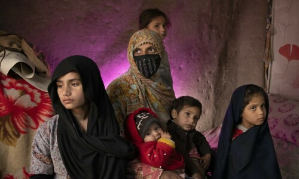
Paris exhibition spotlights Afghan women who ‘lost hope’
26th Amendment: Drafted elsewhere, deliberated by a select few, passed in supreme haste
Will India support Pakistan’s bid to join BRICS?
Resorting to repression, coercive tactics only shows how weak and vulnerable a govt is
Building a climate-resilient Pakistan
Thrilling feat — Pakistan cricket returns to form
Editorial: Next phase of this geopolitical tussle will depend on Iran’s reaction to Israeli provocation
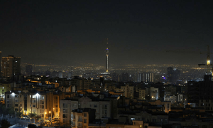
From bras to bags — Kosovo artist makes bold statement for breast cancer awareness
‘I have equal respect for both’ — Gohar Mumtaz opens about Farhan Saeed, Atif Aslam
Editorial: If left unchecked, recurrent violence in KP will further erode people’s confidence in state
No propaganda on earth can hide the wound that is Palestin
Malik Asad
Nasir Iqbal
Amin Ahmed
Imran Gabol
Anwar Iqbal
Xi, Modi meet on Brics summit’s sidelines as India,
China ties recover from 2020 clash
Meeting is first formal talk in five years,
signals recovering ties between Asian giants. Updated about 13 hours ago
7-year-old boy killed, mother and sister injured
in Karachi stabbing: police
Police surgeon says two injured patients are
in serious condition; further investigations
are underway. Updated about 13 hours ago
Bushra Bibi granted bail in new Toshakhana case
IHC approves bail plea of ex-PM Imran's
wife for surety bonds of Rs1m. Updated about 13 hours ago
UK rejects Trump team claims of interference
British PM claims Labour Party officials are
volunteering in the election in a personal
capacity. Updated about 13 hours ago
Justice Yahya Afridi to take oath as CJP on Oct 26 after
president approves appointment
Info minister says nomination done in
“extremely transparent, democratic
manner"; lawyers' bodies welcome decision. Updated about 13 hours ago
1
PTI distances itself from plea filed in IHC on Imran’s behalf
Gohar denies Advocate Faisal’s claim of consent for filing plea; says outdated wakalatnama used.
Pakistan
,
Public
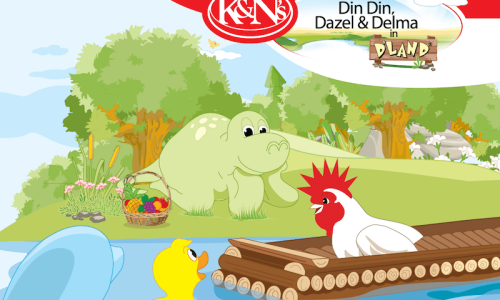
Opinion
Context and intentions
In the backdrop of compromised intentions and context, the parliament may very well end up delegitimising itself.
Umair Javed
EDITORIAL
Wave of violence
If recurrent incidents of violence in KP are left unchecked, they will further erode people’s confidence in the state.
State of chaos
PAKISTAN is the third-worst country for law and order, according to the World Justice Project’s 2024 Rule of Law...
State of chaos
PAKISTAN is the third-worst country for law and order, according to the World Justice Project’s 2024 Rule of Law...
POPULAR OPED WRITERS
Ahmed Bilal Mehboob
Unpacking the amendment
Most governments want to find a way to blunt the judicial weapon of accountability.
Abbas Nasir
Is Middle Eastern escalation inevitable?
If Iran’s threats are more than mere brave words, we stand poised for a mega disaster.
Unpacking the amendment
Most governments want to find a way to blunt the judicial weapon of accountability.
Abdul Moiz Jaferii
The Qazi to end all qazis
With retired CJP Isa, to see or not to see was almost always the question.
Pakistan signs MoU with Russia to ‘enhance parliamentary diplomacy’
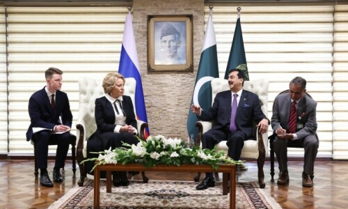
Gilani says visit marks a watershed in long and historic journey of cooperation between Pakistan and Russia Updated about 13 hours ago
Sikh separatist claims Indian ‘spy network’ operates in US and Canada
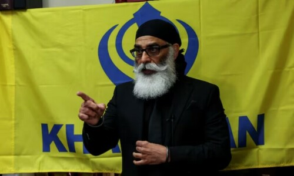
America and Canada have not commented on Gurpatwant Singh Pannun's allegations. Updated about 13 hours ago
UK anti-Islam activist ‘Tommy Robinson’ jailed for breaching injunction
Firebrand's lawyer argues he acted "because he passionately believes in free speech, a free press and ... has to expose the truth.” Updated about 13 hours ago
Illusion of power
Maleeha Lodhi
Gwadar development
Dr Noman Ahmed
The Muslim vote
Huma Yusuf
Unpacking the amendment
Ahmed Bilal Mehboob
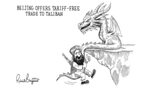
Muna Khan
Loaded questions
Palestinian voices don’t make it to the mainstream press.
Ajaz Ahmed
Climate investment
We have no option, but to invest in climate change adaptation.
Ali Nawab
Teachers’ needs
Imagine a setting where one or two teachers have to teach four to six grades.
READ MORE TOP STORIES
BUSINESS
SPORT
WORLD
Dawn News English
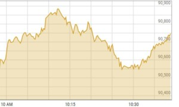
Yet another record high at PSX on rate cut hopes
Manchester United sack manager Ten Hag
Sikh separatist claims Indian ‘spy network’ operates in US and Canada
Russia’s BRICS Summit: What To Expect?
Let’s Talk About Women in Higher Education
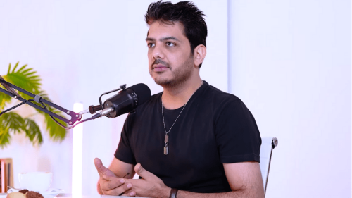
‘I have equal respect for both’ — Gohar Mumtaz opens about Farhan Saeed, Atif Aslam
Images Staff Published about 15 hours ago
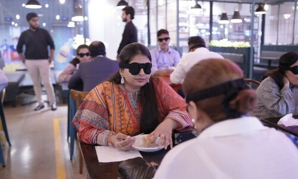
Khaas Foodz offers a unique dinner experience with a side of empathy with Dining in the Dark
The event is meant to raise awareness about disabilities, particularly those related to visual impairments.
Sitara Arshad Updated about 19 hours ago
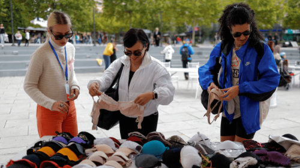
From bras to bags — Kosovo artist makes bold statement for breast cancer awareness
The bags are made of bras in all sizes and colours, and with the money raised from selling them, Ermira Murati buys mastectomy bras.
Reuters Published about 20 hours ago
Business
RoboCup Asia-Pacific 2024 kicks off in E China
Culture
Feeling the festival spirit
Opinion
Intensifying armed conflict in Israel-Iraq sparks concerns of unlikely end
What would a Trump or Harris presidency mean for Pakistan?
Uzair M. Younus Published about 21 hours ago
A year after SC annulled military courts, civilians await justice
The freedom and liberty of these civilians are entirely dependent on the fate of the government's appeal against the SC verdict on Oct 23, 2023.
Rida Hosain Updated 23 Oct, 2024 04:18pm
Fourth Schedule: Combating terrorism or silencing dissent?
Over the past few months, the government's use of the Fourth Schedule has taken a troubling turn, with dozens from KP and Balochistan placed on the list.
Zia Ur Rehman Published 16 Oct, 2024 11:02am
TECH
Elon Musk was illegal migrant in US in 1990s
Reuters Updated about 15 hours ago
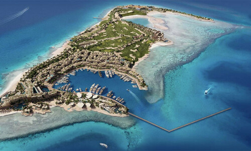
Saudi opens resort island at futuristic mega-city
The opening of the island, known as Sindalah, comes amid persistent doubts about Neom’s viability.
AFP Published a day ago
Nasa astronaut hospitalised on return from ISS after eight months
Nasa says 3 other crew members have left hospital, returned to Houston
Reuters Updated 3 days ago
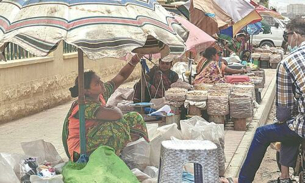
THE UNWALKABLE CITY OF KARACHI
Marvi Mazhar | Zahra Hirji Published 2 days ago
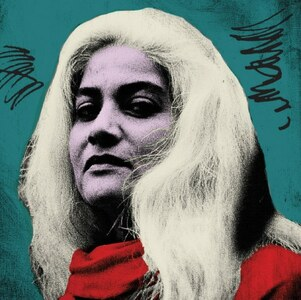
ARTSPEAK: FABRICATING STORIES
From ancient myths to modern political symbolism, there exists an intricate relationship between textiles and storytelling
Durriya Kazi Published 2 days ago
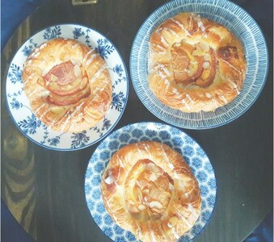
EPICURIOUS: A PEACHY DESSERT
A delectable addition to tea time, the Danish pastry was invented by mistake
Maliha Diwan Published 2 days ago
SPOTLIGHT: THE DEATH OF CINEMA
Mohammad Kamran Jawaid Published 2 days ago
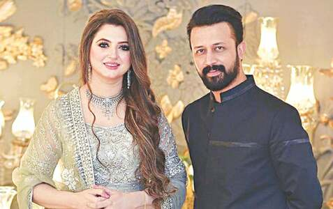
THE GRAPEVINE
October 15 is the birthday of singing superstar Atif Aslam’s wife Sara Bharwana. Contrary to his serious demeanour
PYT Published 2 days ago
CINEMASCOPE; WILD AT HEART
So what is it that makes The Wild Robot work? Well, that would be everything, including the expected
Mohammad Kamran Jawaid Published 2 days ago
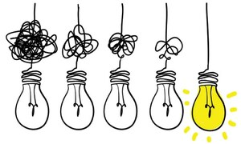
Electricity — a state monopoly
Weeding out a crop killer
Grid-based battery energy storage solutions
From ink to inbox
Mailbox
Advice: Love yourself!
Building a climate-resilient Pakistan
Candi and friendship go hand in hand in their latest campaign
Artistic Milliners named one of Vogue Business’ Top 100 Innovators of 2024